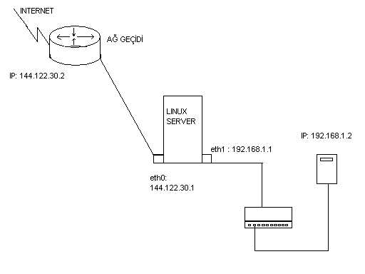

- Yasal Uyarı
- Bu belgenin, Iptables ile Yönlendirme 1.0 sürümünün telif hakkı © 2004 Genco Yılmaz'a aittir. Bu belgeyi, Free Software Foundation tarafından yayınlanmış bulunan GNU Özgür Belgeleme Lisansının 1.1 sürümünün koşullarına bağlı kalarak kopyalayabilir, dağıtabilir ve/veya değiştirebilirsiniz. Bu Lisansın bir kopyasını http://www.gnu.org/copyleft/fdl.html adresinde bulabilirsiniz.BU BELGE “ÜCRETSİZ” OLARAK RUHSATLANDIĞI İÇİN, İÇERDİĞİ BİLGİLER İÇİN İLGİLİ KANUNLARIN İZİN VERDİĞİ ÖLÇÜDE HERHANGİ BİR GARANTİ VERİLMEMEKTEDİR. AKSİ YAZILI OLARAK BELİRTİLMEDİĞİ MÜDDETÇE TELİF HAKKI SAHİPLERİ VE/VEYA BAŞKA ŞAHISLAR BELGEYİ “OLDUĞU GİBİ”, AŞİKAR VEYA ZIMNEN, SATILABİLİRLİĞİ VEYA HERHANGİ BİR AMACA UYGUNLUĞU DA DAHİL OLMAK ÜZERE HİÇBİR GARANTİ VERMEKSİZİN DAĞITMAKTADIRLAR. BİLGİNİN KALİTESİ İLE İLGİLİ TÜM SORUNLAR SİZE AİTTİR. HERHANGİ BİR HATALI BİLGİDEN DOLAYI DOĞABİLECEK OLAN BÜTÜN SERVİS, TAMİR VEYA DÜZELTME MASRAFLARI SİZE AİTTİR.İLGİLİ KANUNUN İCBAR ETTİĞİ DURUMLAR VEYA YAZILI ANLAŞMA HARİCİNDE HERHANGİ BİR ŞEKİLDE TELİF HAKKI SAHİBİ VEYA YUKARIDA İZİN VERİLDİĞİ ŞEKİLDE BELGEYİ DEĞİŞTİREN VEYA YENİDEN DAĞITAN HERHANGİ BİR KİŞİ, BİLGİNİN KULLANIMI VEYA KULLANILAMAMASI (VEYA VERİ KAYBI OLUŞMASI, VERİNİN YANLIŞ HALE GELMESİ, SİZİN VEYA ÜÇÜNCÜ ŞAHISLARIN ZARARA UĞRAMASI VEYA BİLGİLERİN BAŞKA BİLGİLERLE UYUMSUZ OLMASI) YÜZÜNDEN OLUŞAN GENEL, ÖZEL, DOĞRUDAN YA DA DOLAYLI HERHANGİ BİR ZARARDAN, BÖYLE BİR TAZMİNAT TALEBİ TELİF HAKKI SAHİBİ VEYA İLGİLİ KİŞİYE BİLDİRİLMİŞ OLSA DAHİ, SORUMLU DEĞİLDİR.Tüm telif hakları aksi özellikle belirtilmediği sürece sahibine aittir. Belge içinde geçen herhangi bir terim, bir ticari isim ya da kuruma itibar kazandırma olarak algılanmamalıdır. Bir ürün ya da markanın kullanılmış olması ona onay verildiği anlamında görülmemelidir.
Mart 2004
Sürüm Bilgileri
| ||||||
- Özet
- Linux dağıtımınızla birlikte iptables paketinin gelmeme ihtimali biraz zor. Birçok çekirdek ön tanımlı olarak aşağıdaki işlemleri kabul edeceğinden, ayrıca bu seçeneklerden bahsedilmeyecek. Kısa, açıklayıcı ayrıntılara girmeden aşağıda bu paket ile nasıl yerel ağdaki bilgisayarlar internete çıkarılır anlatmaya çalıştım. Birilerine yardımcı olabilecekse bu belge ne mutlu.
Aşağıda örneklendirme yaptığımız ağımızın bir resmi bulunmaktadır.
Şekil 10.1.

- Linux sisteminiz, ona yönlendirme yap emrini vermediğiniz sürece kendi arayüzüne gelen ve başka ağlara gitmek isteyen paketleri hiçbir şekilde aktarmayacaktır. Bu nedenle aşağıdaki komutu yazarak Linux'a sen bundan sonra IP paketlerini yönlendireceksin diyelim:
# sysctl -w net.ipv4.ip_forward=1
Linux artık bir yönlendirici. - Linux makinamıza bağlı iki ethernet kartı olduğunu ve IP adreslerinin aşağıdaki gibi olduğunu düşünelim:
eth0: 144.122.30.1 255.255.255.0 eth1: 192.168.1.1 255.255.255.0 Ag geçidi: 144.122.30.2
eth0 arayüzünde bulunan IP adresimiz gerçek IP olarak adlandırılan (ki bütün IP'ler gerçektir aslında) ve dış dünyadan bize erişilecek olan adresimizdir. eth1 arayüzümüz ise kendi yerel ağımız tarafına bakmaktadır ve yerelde kullanabileceğimiz bir IP bloğudur.IP'lerimizi ve ağ geçidimizi ayarlayalım.# ifconfig eth0 144.122.30.1 netmask 255.255.255.0 # ifconfig eth1 192.168.1.1 netmask 255.255.255.0 # route add default gw 144.122.30.2
Daha iyi örneklemek için bir de ifconfig komut çıktımıza bakalım:root@plato:~# ifconfig eth0 Link encap:Ethernet HWaddr 00:A0:CC:51:29:D5 inet addr:144.122.30.1 Bcast:144.122.30.255 Mask:255.255.255.0 UP BROADCAST RUNNING MULTICAST MTU:1500 Metric:1 RX packets:1673347 errors:1 dropped:0 overruns:0 frame:0 TX packets:1772806 errors:5 dropped:0 overruns:4 carrier:1 collisions:0 txqueuelen:1000 RX bytes:734752241 (700.7 Mb) TX bytes:172546994 (164.5 Mb) Interrupt:11 Base address:0xa000 eth1 Link encap:Ethernet HWaddr 00:02:44:6C:12:62 inet addr:192.168.1.1 Bcast:192.168.1.255 Mask:255.255.255.0 UP BROADCAST RUNNING MULTICAST MTU:1500 Metric:1 RX packets:0 errors:0 dropped:0 overruns:0 frame:0 TX packets:0 errors:2009 dropped:0 overruns:0 carrier:4000 collisions:0 txqueuelen:1000 RX bytes:0 (0.0 b) TX bytes:0 (0.0 b) Interrupt:10 Base address:0xa400 - Şimdi ise içeride bulunan 192.168.1.2-192.168.1.254 IP aralığındaki bütün bilgisayarları dış ağa, içerideki IP adreslerini gizleyerek 144.122.30.1 adresiyle dışarı çıkartacağız. Bundan sonra içerdeki makinaların IP adresleri dış ağla iletişim kurduklarında 144.122.30.1 şeklinde görünecek
# iptables -t nat -A POSTROUTING -s 192.168.1.0/24 -j SNAT -o eth0 ¬ --to-source 144.122.30.1
Son yapılacak iş arayüzler için yaptıgımız ayarları dağıtımınızın yapılandırma dosyalarına göre uygun yerlere yazmak. iptables için olan yapılandırmamızı /etc/rc.d/rc.local dosyasına aşağıdaki şekilde yazalım ki, her açılışta etkin olsun.
Not Kullanıcıların ftp protokolünü kullanabilmeleri için iki modülüde yüklemeliyiz.sysctl -w net.ipv4.ip_forward=1 iptables -t nat -A POSTROUTING -s 192.168.1.0/24 -j SNAT -o eth0 ¬ --to-source 144.122.30.1 modprobe ip_conntrack_ftp modprobe ip_nat_ftp
# man iptables